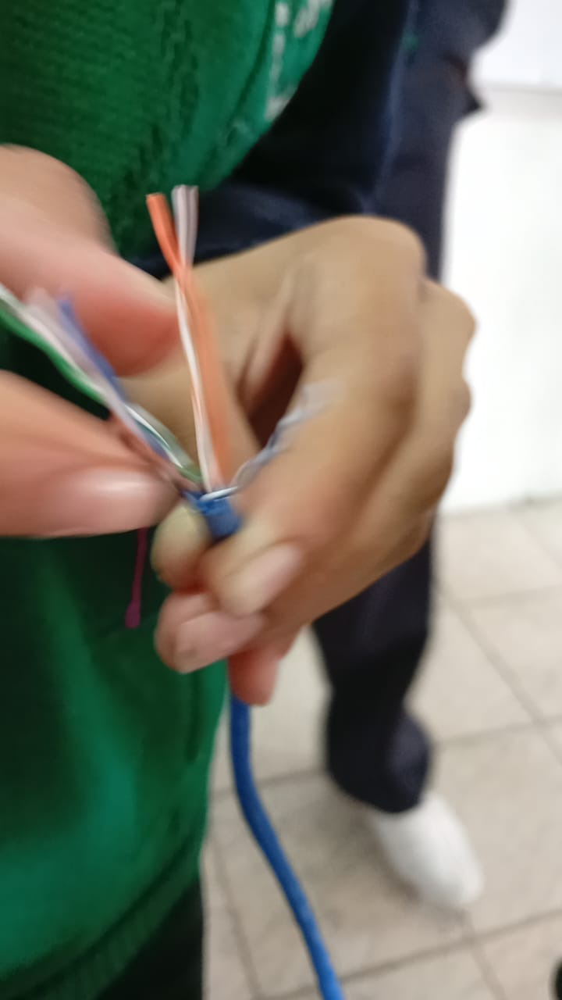
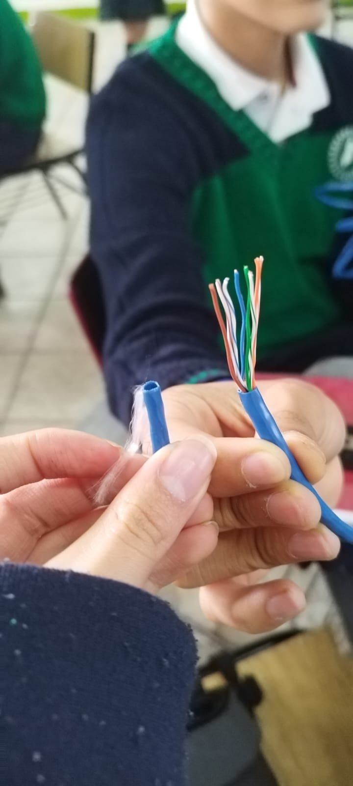

Pasos a Seguir
Paso 1: Pelar el Cable
Utiliza las pinzas ponchadoras para retirar la capa exterior del cable UTP. Este paso es importante para acceder a los cables trenzados que se encuentran dentro. Asegúrate de no cortar los cables internos mientras realizas este paso.

Paso 2: Destrenzar los Cables
Después de pelar el cable, los cables internos estarán trenzados. Debes separarlos con cuidado y destrenzarlos para organizarlos según la norma de cableado que vayas a utilizar.

Paso 3: Seleccionar la Norma
Existen dos normas principales para el cableado de red: 568-A para cables directos y 568-B para cables cruzados. Elige la norma según el tipo de cable que quieras fabricar.
Paso 4: Acomodar los Cables
Con los cables destrenzados, empieza a acomodarlos según la norma seleccionada (T568-A o T568-B). Asegúrate de que los cables estén bien alineados para facilitar la inserción en el RJ45.
Paso 5: Insertar los Cables en el RJ45
Inserta cada cable en el conector RJ45, asegurándote de que todos los cables lleguen hasta el fondo del conector. El primer cable debe ir en el pin 1 del RJ45.

Paso 6: Ponchar el Cable
Usa las pinzas ponchadoras para fijar los cables dentro del conector RJ45. Este paso asegura que los cables no se salgan del conector y se mantengan firmes.
Paso 7: Verificar con el Tester
Usa un tester para comprobar que los cables estén bien conectados y que el cable funcione correctamente. El tester te mostrará si los cables están bien conectados o si hay algún problema.

Comparación de las Normas T568-A y T568-B
| T568-A | T568-B |
|---|---|
| Pin 1: Blanco/Verde | Pin 1: Blanco/Naranja |
| Pin 2: Verde | Pin 2: Naranja |
| Pin 3: Blanco/Naranja | Pin 3: Blanco/Verde |
| Pin 4: Azul | Pin 4: Azul |
| Pin 5: Blanco/Azul | Pin 5: Blanco/Azul |
| Pin 6: Naranja | Pin 6: Verde |
| Pin 7: Blanco/Marrón | Pin 7: Blanco/Marrón |
| Pin 8: Marrón | Pin 8: Marrón |